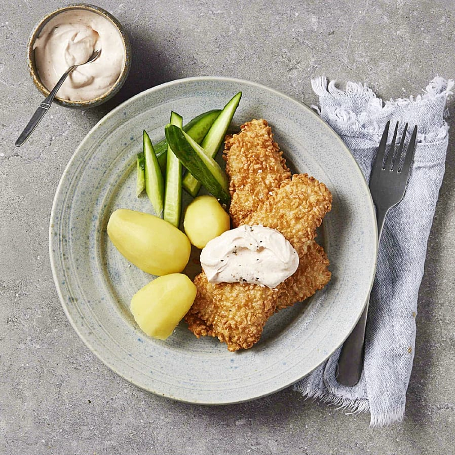

Crispy baked cod with Rhode Island
Home

Crispy baked cod with Rhode Island
Sometimes the simplest everyday meal is in the freezer. With crispy baked
cod, boiled potatoes and a quick Rhode Island sauce, dinner is on the
table in half an hour. If you have time, you can spice up the sauce with
mustard and chili powder for more flavor.
Ingredients
- 900 g potatoes (preferably delicate)
- 2 pre-packaged crispy baked cod fillets (360 g each)
- 2 tbsp chili sauce
- 2 tsp salt
- 1 pinch pepper
- 1 cucumber
- 1 tbsp oil (if frying the fish in a frying pan)
Steps
- Boil the potatoes.
- Cook the fish according to the instructions on the package.
-
Mix together crème fraiche, chili sauce, salt and pepper in a bowl.
- Cut the cucumber into sticks or slices.
- Serve the cod with potatoes, cucumber and Rhode Island sauce.